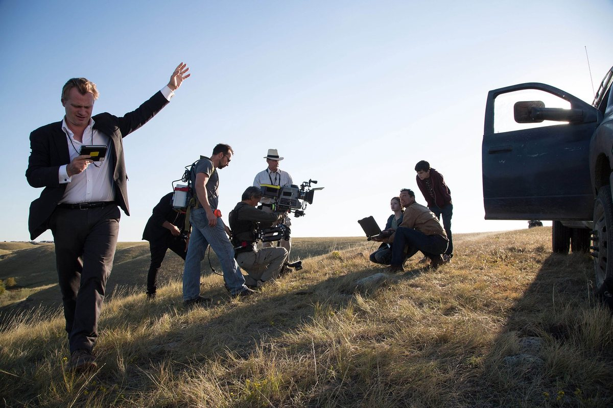
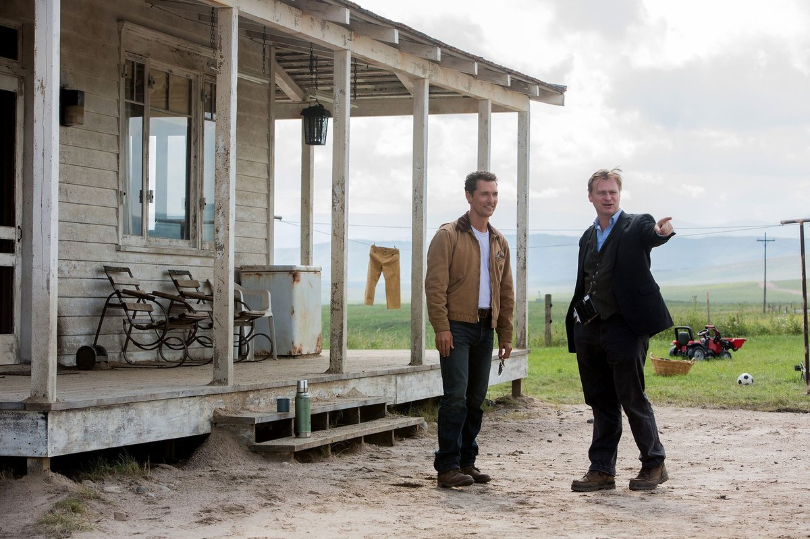
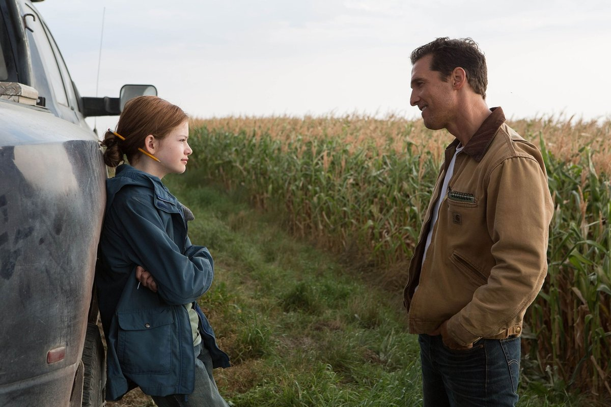
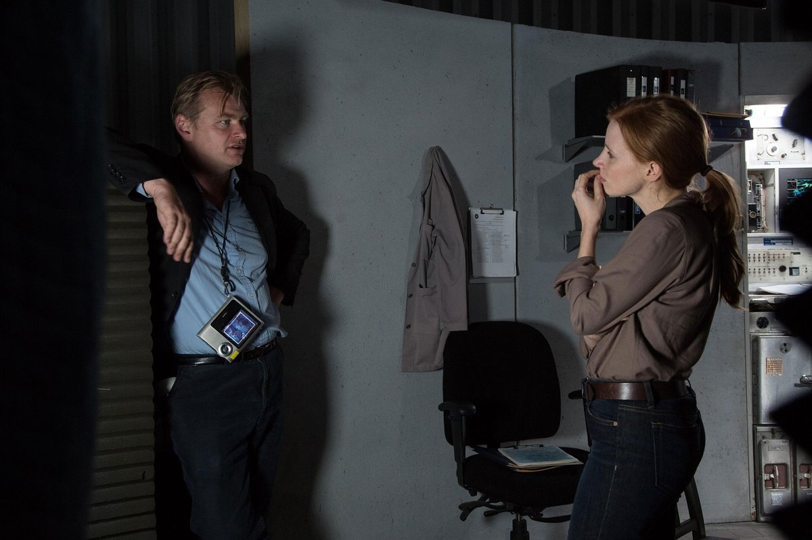
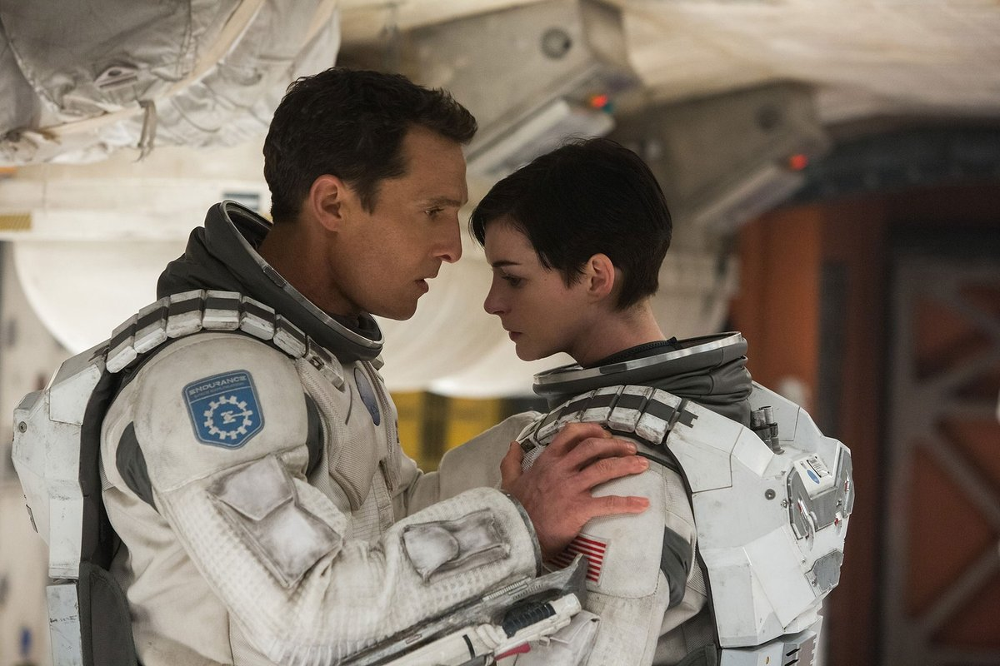
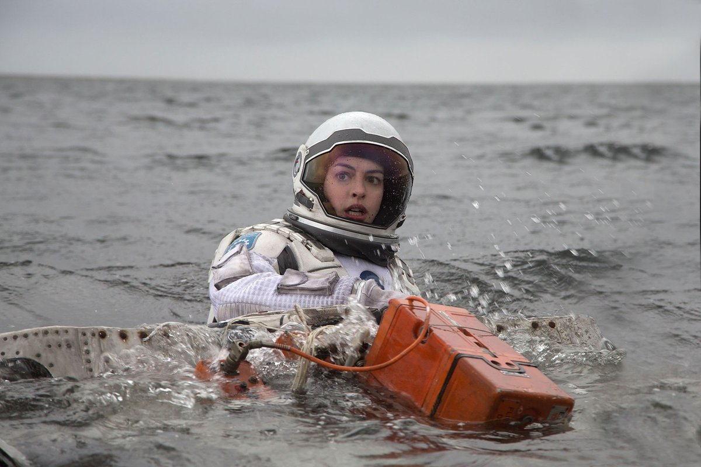
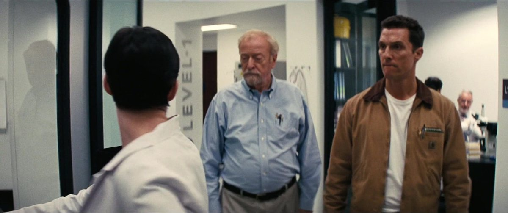
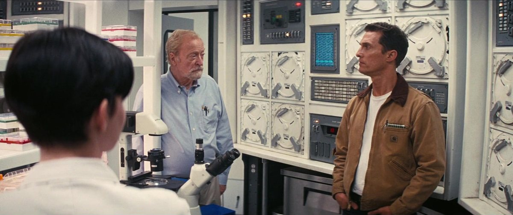
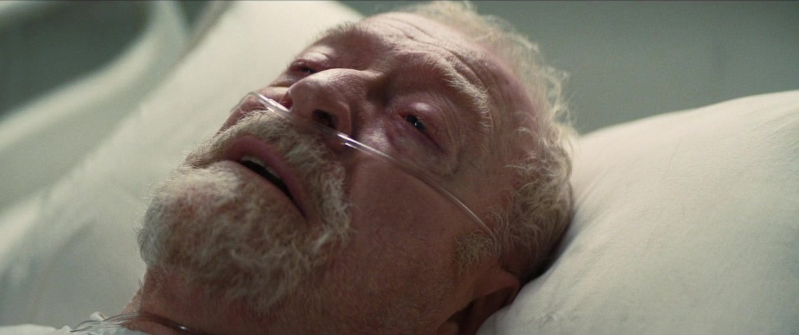
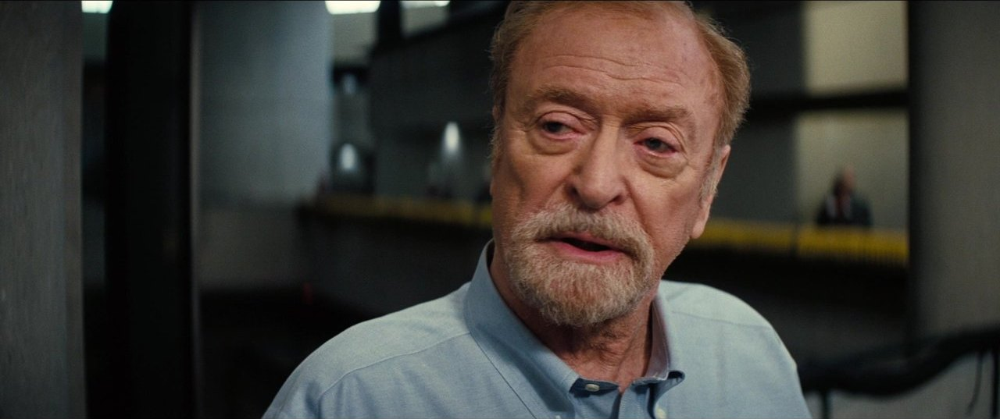

Personajes
Interstellar es, sobre todo, una historia de personas: un padre que promete volver, una hija que espera y un puñado de científicos y robots que cargan con el futuro de la especie. Quiénes son, con los spoilers justos.
-
CooperPiloto · Endurance -
MurphFísica · NASA -
Dr. BrandBióloga · Endurance -
Profesor BrandDirector de la misión -
MannCientífico · Lázaro -
TARS & CASERobots · Endurance
Piloto · Endurance
Cooper
Ex piloto e ingeniero de la NASA, ahora agricultor. Acepta pilotar el Endurance a través del agujero de gusano con una sola promesa: volver.
Quién es
Joseph Cooper es un ex piloto e ingeniero de la NASA en una época en la que ya casi nadie mira al cielo. Viudo, vive con su suegro y sus dos hijos, Tom y Murph, en una granja de maíz castigada por las tormentas de polvo. Extraña volar, pero se resignó a ser agricultor como todo el mundo.
1 / 5
Escena 01 · Antes del despegue
El último vistazo a la Tierra
El momento en que Cooper se pone el casco de piloto por primera vez en años, minutos antes de dejar un planeta que ya no puede sostener a su familia.
Escena 02 · Bajo presión
Cuando el plan se desarma
El acoplamiento de emergencia del Endurance, dañado tras el sabotaje de Mann: una maniobra imposible que pone a prueba todo lo aprendido.
Escena 03 · El adiós
La promesa que sostiene todo
La despedida que Murph se niega a cerrar: la última vez que Cooper la ve de niña, antes de convertirse en el "fantasma" de su habitación.
Escena 04 · Detrás de cámaras
El rodaje, en la vida real
Christopher Nolan dirige a McConaughey, Mackenzie Foy y Timothée Chalamet en el set real de la granja, en las afueras de Calgary — la misma ladera que después se ve en pantalla.
Escena 05 · La preparación
Un diálogo constante en el set
Christopher Nolan conversa con McConaughey en el porche de la granja construida en las afueras de Calgary, afinando la próxima toma antes de rodar.




Su papel en la historia
Una anomalía en la habitación de Murph lo lleva hasta una base secreta de la NASA, que le ofrece pilotar la nave Endurance a través de un agujero de gusano. Acepta con una promesa: volver. Ese regreso —y los años que pierde en el planeta de Miller— es el corazón emocional de la película. En el tramo final se deja caer dentro de Gargantúa y termina en el Tesseract, desde donde se comunica con Murph a través del tiempo: él era el "fantasma" de su habitación.
Rasgos distintivos
- Piloto por vocación, agricultor por obligación.
- Su brújula es la promesa a Murph, no la misión.
- Práctico y de reflejos rápidos ante una emergencia.
- El personaje a través del cual el espectador entra a toda la historia.
- Su reloj de pulsera es el canal del mensaje final.
Reparto: Matthew McConaughey.
Física · NASA
Murph
Hija menor de Cooper. De niña, terca y convencida de que hay un "fantasma" en su cuarto. De adulta, física que termina resolviendo la ecuación que salva a la humanidad.
Quién es
Murphy "Murph" Cooper es la hija menor de Cooper. De niña es terca, curiosa y está convencida de que hay un "fantasma" que le tira libros del estante. De adulta se convierte en física de la NASA y trabaja junto al profesor Brand en el problema que podría salvar a la humanidad.
1 / 5
Escena 01 · La niña que no se despidió
El fantasma del estante
Murph convencida de que algo le habla desde los libros que caen, mucho antes de entender que ese "fantasma" es su propio padre, atravesando el tiempo.
Escena 02 · La persecución
Correr detrás de una respuesta
Murph deja de aceptar la explicación fácil y empieza a investigar por su cuenta, negándose a resignarse como el resto del mundo.
Escena 03 · Décadas después
El cierre del círculo
Murph anciana, rodeada de su familia, cerrando la historia que empezó con un padre que prometió volver.
Escena 04 · Detrás de cámaras
El título secreto del rodaje
Mackenzie Foy y Matthew McConaughey, entre tomas, apoyados en la camioneta junto al maizal real plantado para el rodaje.
Escena 05 · La preparación
Afinando la escena del laboratorio
Christopher Nolan conversa con Jessica Chastain en el set de la NASA, repasando la actuación antes de rodar.




Su papel en la historia
El día que su padre parte, ella se niega a despedirse; ese enojo la marca durante décadas. Mientras Cooper viaja, Murph crece, investiga y sospecha que el "Plan A" es una mentira. En el desenlace recibe desde el Tesseract los datos que su padre le transmite por la manecilla de un reloj, completa la ecuación de la gravedad y hace posible que la humanidad deje la Tierra. El "fantasma" de su infancia era él, todo el tiempo.
Rasgos distintivos
- De niña: obstinada, observadora, se pelea con lo que no entiende.
- De adulta: científica brillante y escéptica del discurso oficial.
- El resentimiento hacia su padre es el motor de su arco.
- "Murphy": lo que puede pasar, pasará —para bien y para mal—.
- Resuelve el problema que ninguna generación anterior pudo cerrar.
Reparto: Jessica Chastain (adulta), Mackenzie Foy (niña), Ellen Burstyn (anciana).

Bióloga · Endurance
Dr. Brand
Sostiene que el amor es información que hay que tomar en serio, no una debilidad — y es la única que llega, sola, al planeta que eligió por eso.
Quién es
La doctora Amelia Brand es científica y astronauta de la tripulación del Endurance. Es hija del profesor John Brand, el líder de la misión en la Tierra; conviene no confundirlos, porque ella viaja y él se queda. Es bióloga y la responsable de los embriones del "Plan B".
1 / 5
Escena 01 · El duelo en el planeta de Miller
Lo que cuesta cada hora
Empapada entre los restos de la estación de Miller, Brand recién entiende lo que significó perder a Doyle — y lo que le costó a la misión cada hora perdida en ese mundo.
Escena 02 · Seguir adelante en el hielo
El trabajo como respuesta
En el planeta de Mann, Brand vuelve al trabajo metódico de siempre: revisar suministros, sostener la misión, aunque el duelo por Doyle todavía esté fresco.
Escena 03 · El descenso a Gargantúa
La decisión que ya había tomado
Antes de separarse de Cooper y TARS, Brand se prepara para el descenso a Gargantúa: el mismo cálculo frío de la misión, sostenido esta vez por una convicción que nadie más compartía.
Escena 04 · Detrás de cámaras
Los trajes, frente a frente
Cooper y Brand, con los trajes de la misión puestos, en un momento de tensión a bordo del Endurance durante el rodaje.
Escena 05 · El agua helada
Lo que no se ve en pantalla
Brand luchando contra el agua en el planeta de Miller, aferrada a los restos de la nave — la secuencia acuática que se filmó en Islandia.




Su papel en la historia
Cuando hay que decidir el último planeta a visitar, discute con Cooper: quiere ir al mundo de Edmunds, el hombre al que ama, y defiende que el amor es información que hay que tomar en serio. Pierde esa votación, pero al final es ella quien llega —sola— al planeta de Edmunds y empieza a montar allí la colonia humana con los embriones. Cierra la película plantando el futuro de la especie lejos de casa.
Rasgos distintivos
- Hija del profesor Brand; parte en el Endurance mientras él dirige desde la Tierra.
- Bióloga a cargo del "Plan B" (los embriones).
- Sostiene que el amor es un dato, no una debilidad.
- Sobrevive a la misión y funda la colonia en el planeta de Edmunds.
- Contrapeso emocional del cálculo frío del resto de la tripulación.
Reparto: Anne Hathaway.

Director de la misión
Profesor Brand
La cabeza de lo que queda de la NASA, el hombre que recita a Dylan Thomas antes de cada despegue — y que mintió durante años para que la humanidad no dejara de intentarlo.
Quién es
El profesor John Brand es la cabeza de lo que queda de la NASA, que funciona en secreto. Es el padre de Amelia y el mentor de Cooper y de Murph: la figura de autoridad científica de la película, el hombre que recita a Dylan Thomas antes de cada despegue.
1 / 5
Escena 01 · La NASA que nadie conocía
Un secreto bajo tierra
Brand recibe a Cooper en las instalaciones subterráneas de la NASA: la agencia que el mundo cree disuelta sigue trabajando en secreto en un último plan para salvar a la especie.
Escena 02 · El plan que dirige en secreto
El peso de la ecuación
Entre laboratorios y cámaras de hibernación, Brand le muestra a Cooper el alcance real de la misión: décadas de trabajo puestas en una sola ecuación de la gravedad.
Escena 03 · La confesión en el lecho de muerte
La mentira que sostuvo todo
Ya sin fuerzas, Brand le confiesa a Murph adulta que el "Plan A" nunca pudo cerrarse: mintió durante años para que la NASA siguiera trabajando en el verdadero plan, el "Plan B".
Escena 04 · El físico detrás del personaje
La barba de un consultor científico
Un primer plano de Brand en las instalaciones de la NASA, con la barba que Caine dejó crecer especialmente para el papel.
Escena 05 · Un papel distinto para Caine
Lo que Nolan vio en este personaje
Brand, ya frágil, recorre en silla de ruedas los mismos pasillos de la NASA donde años atrás recibió a Cooper.




Su papel en la historia
En público trabaja en el "Plan A": una ecuación de la gravedad que permitiría despegar de la Tierra estaciones enteras con toda la humanidad a bordo. En su lecho de muerte le confiesa a Murph que esa ecuación no se podía cerrar sin datos del interior de un agujero negro —que creía imposibles de obtener— y que el "Plan B" siempre fue el plan real. Mintió durante años para que la gente siguiera trabajando.
Rasgos distintivos
- Padre de Amelia; dirige la misión desde la Tierra y no viaja.
- Impulsor del "Plan A", la ecuación de la gravedad.
- Cargó en soledad con la certeza de que el Plan A no cerraba.
- Su mentira sostiene el esfuerzo de toda una generación.
- "No entres dócilmente en esa buena noche": su lema.
Reparto: Michael Caine.

Científico · Lázaro
Mann
Presentado como "el mejor de nosotros": el científico más admirado de las misiones Lázaro — hasta que la tripulación descubre la verdad detrás de las señales de su planeta helado.
Quién es
El doctor Mann es presentado como "el mejor de nosotros": el científico más admirado de las misiones Lázaro, el que inspiró a todos los demás a partir. Su planeta helado es el que envía las señales más prometedoras, así que el Endurance pone rumbo allí para despertarlo de la hibernación.
1 / 5
Escena 01 · El mejor de nosotros
Un referente, no un extraño
Mann recibe a la tripulación como a viejos colegas: es el científico que todos admiran, el que dio nombre a la esperanza de las misiones Lázaro.
Escena 02 · La mentira bajo el hielo
Lo que el miedo puede hacer
Cuando Cooper descubre que los datos del planeta fueron falsificados, Mann intenta matarlo en pleno hielo antes que dejarlo revelar la verdad.
Escena 03 · El acoplamiento fatal
La traición que casi hunde la misión
Mann intenta robar una nave y acoplarse solo al Endurance; el error de maniobra provoca una explosión que deja a la nave nodriza gravemente dañada.
Escena 04 · El glaciar islandés
Rodar en el fin del mundo
La tripulación avanza en fila sobre el hielo real de un glaciar islandés, en las condiciones extremas que definen todo el planeta de Mann.
Escena 05 · El hombre del que todos hablan
Una presencia que precede a la aparición
Dos figuras diminutas avanzan hacia la niebla espesa del planeta, camino al lugar donde Mann lleva años esperando en soledad.


Su papel en la historia
La verdad es que su mundo es inhabitable y que Mann falsificó los datos para que alguien viniera a rescatarlo: no soportaba la idea de morir solo. Cuando la tripulación lo descubre, intenta matar a Cooper y huir con una de las naves; muere en un acoplamiento mal hecho que deja al Endurance gravemente dañado. Es el reverso oscuro del heroísmo de la misión: lo que el instinto de supervivencia puede hacerle a una buena persona.
Rasgos distintivos
- "El mejor de nosotros": referente moral de las misiones Lázaro.
- Falsificó los datos de su planeta para forzar un rescate.
- El miedo a morir solo por encima de todo lo demás.
- Único antagonista humano de la película.
- Su traición deja al Endurance herido y sin margen.
Reparto: Matt Damon.
Robots · Endurance
TARS & CASE
Dos bloques metálicos articulados, sin cara ni rasgos humanos, con parámetros de humor y sinceridad que se ajustan por voz — y sin los cuales ni el aterrizaje ni el mensaje final habrían sido posibles.
Quién es
Son los dos robots de la misión, antiguas unidades tácticas de los marines reconvertidas para la exploración espacial. Tienen forma de bloques metálicos articulados que caminan, ruedan o se pliegan según haga falta, y parámetros que se ajustan por voz: humor, sinceridad, discreción.
1 / 5
Escena 01 · TARS, el humor regulable
Un compañero, no una herramienta
A bordo del Endurance, TARS se presenta con su humor al 90% y su sinceridad al 90%: parámetros que Cooper ajusta como quien conoce a un compañero de tripulación, no una máquina.
Escena 02 · CASE, el compañero silencioso
El que no necesita hablar
Más parco que TARS, CASE acompaña en silencio mientras el resto de la tripulación decide el rumbo — el mismo diseño monolítico, con una personalidad bastante más discreta.
Escena 03 · Arquitectura, no ciencia ficción
Un robot diseñado como un edificio
CASE, solo frente al mar de Miller, con la nave descendiendo al fondo: la silueta geométrica y monolítica que define a ambas máquinas.
Escena 04 · Máquinas, no robots
Una palabra evitada a propósito
Cooper conversa a bordo del Endurance, con el bloque de TARS visible al fondo: una presencia discreta, lejos de cualquier robot humanoide de ciencia ficción.
Escena 05 · La voz detrás del bloque
Encontrando el tono correcto
El detalle de la pantalla de datos de uno de los bloques articulados, junto a la escalera de acceso del Endurance — el mismo diseño para TARS y para CASE.

Su papel en la historia
TARS acompaña a Cooper durante todo el viaje —es sarcástico, leal y siempre tiene una respuesta lista—; CASE se queda con Amelia Brand, más callado y metódico. CASE pilota la maniobra imposible de acoplamiento tras el sabotaje de Mann; TARS se deja caer con Cooper dentro de Gargantúa para medir desde el interior los datos cuánticos que Murph necesita. Sin ellos, ni el aterrizaje ni el mensaje final serían posibles.
Rasgos distintivos
- Diseño monolítico articulado, sin cara ni rasgos humanos.
- Ajustes de humor y sinceridad regulables por la tripulación.
- TARS va con Cooper (irónico); CASE va con Brand (parco).
- CASE salva el acoplamiento tras el sabotaje de Mann.
- TARS entra en Gargantúa y transmite los datos cuánticos.
Reparto: Bill Irwin (voz y manipulación de TARS), Josh Stewart (voz de CASE).